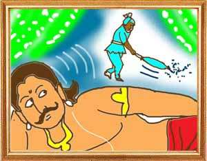

In the city of Vardhaman, there lived a wealthy merchant named Dantila. He held a great reception for his wedding attended by the king, the queen, their ministers and all the rich and influential persons in the city. Present at the reception was Gorambha, a lowly sweeper in the royal household. When Dantila saw him occupying a seat reserved for the nobles of the king, he ordered his servants to throw him out of his house.
Thus insulted, Gorambha thought to himself, “I am a poor man and so cannot give a fitting reply to such a wealthy person as Dantila. I must some how see that the king stops his favours to him.” Then he hit upon a plan to take revenge on Dantila. One early morning when the king was still in sleep, Gorambha pretending to sweep the king's bedroom began loudly murmuring, “Oh, how arrogant is Dantila! He has the cheek to lock the queen in his embrace.” Hearing this, the king demanded to know whether what Gorambh was murmuring is true. Did Dantila embrace the queen?
“Oh, your majesty, I don't remember nor do I know what I was saying because I was drowsy having spent the entire night in gambling,” the sweeper told the king. Not satisfied with his reply the king thought that it was possible that the sweeper had seen Dantila, who had equal access to the royal household as Gorambha, embracing the queen. He remembered wise men saying that men were likely to talk in their sleep about what they did, saw and desired in the day. Women were chaste because men were not within reach or they were afraid of prying servants. Convinced that Dantila had indeed embraced the queen, the king barred Dantila from entering the royal household.
The merchant began grieving his fate though he had not done any harm to the king or his relatives even in his dreams. One day as Dantila was trying to enter the king's palace he was barred by the king's men. Seeing this Gorambha told them, “You fools, you are barring the great Dantila who has won the king's favours. He is powerful. If you stop him, you will meet with the same fate as I did at the hands of Dantila one day.” The merchant thought that it would do him good to make Gorambha happy and win his confidence. One evening he invited the sweeper for tea and presented him with expensive clothes and told him, “Friend, I had never meant to insult you. You had occupied a seat I had set apart for the learned. Kindly pardon me.”
Pleased, the sweeper promised to win the king's favour for Dantila again. The next day, Gorambha repeated the same drama of pretending to talk irrelevantly, raving that the king was eating cucumber in the rest room. “What nonsense are you talking? Did you ever see me doing such things?” the king demanded to know. “No, your majesty. I do not know nor do I remember what I was saying because I was drowsy having spent the entire night in gambling,” the sweeper said.
The king then realized that if what the sweeper had said about him was not true what he had said about Dantila also could not be true. A person like Dantila could not have done what Gorambha had told him. The king also found that without Dantila the affairs of the state had suffered and civic administration had come to a standstill. The king immediately summoned the merchant to his palace and restored to him all the authority he had enjoyed before he fell out of king's favour.